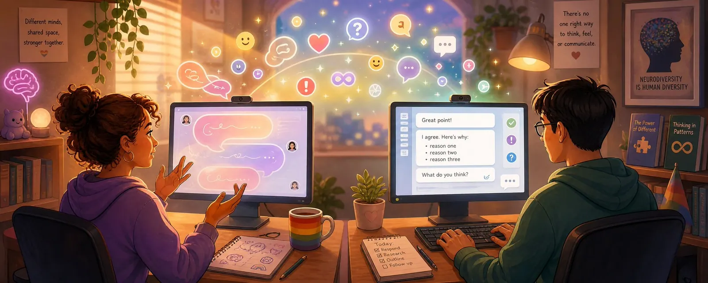

Communication in Text, Part II: Thinking
This series is not meant to be scientific and it is not a guide.
It simply tries to create a bit more understanding for why communication can sometimes be more complicated than it should be.
And perhaps it helps someone approach conversations with a little more patience and curiosity.
Different Ways of Thinking and Communicating in Online Communities
In the first part of this reflection, I talked about language, translation, and how misunderstandings can happen when people from different cultures communicate in a shared language.
But as I kept writing and thinking about the topic, I realized there is another layer that is just as important.
Not all misunderstandings come from language.
Sometimes they come from different ways of thinking and processing communication.
That was something I had to learn myself.
Online communities bring together people from many different backgrounds — not only culturally and linguistically, but also cognitively. Some people are neurotypical; others are neurodivergent.
But these are not rigid categories. Instead, they represent different points on a spectrum, and the boundaries between them are often fluid. Many people find themselves somewhere in between, or may shift from one end to the other depending on the situation.
When these different communication styles meet, misunderstandings can happen even when everyone involved has good intentions.
Neurodiversity is broader and less clear-cut than many people think
When people talk about different ways of thinking, they often only mention autism. But neurodiversity is actually a much broader concept.
It includes many neurological differences, for example:
- Autism spectrum / Asperger’s
- ADHD
- Dyslexia
- High sensitivity
- other cognitive differences
These are not illnesses in the traditional sense, but different ways in which the brain processes information.
Even within these groups, there are no sharp boundaries. Each person is unique — and many people have traits from both sides, or shift between different styles in different contexts.
The goal of talking about neurodiversity is not to categorize people, but to understand that different brains can process communication in different ways — and that these differences are often gradual and overlapping.
Autism and Asperger’s
In the past, people often distinguished between autism and Asperger syndrome.
Today, most experts speak about the autism spectrum, because the boundaries between these categories are not always clear.
People on the autism spectrum may sometimes:
- communicate more directly
- interpret language more literally
- prefer clarity and structure
- have difficulty interpreting indirect hints or subtext
This does not mean that emotions are weaker. In many cases, emotions are simply processed or expressed differently.
Different communication systems
One helpful way to understand this is to imagine that people sometimes operate with different communication systems.
Neither system is better or worse. They simply function differently.
Many neurotypical people rely strongly on:
- context
- tone
- social cues
- subtext
A lot of meaning can exist between the lines.
For example, a sentence like:
"That’s interesting"
could mean genuine curiosity.
But depending on tone or context it might also mean:
- skepticism
- disagreement
- polite criticism
Many neurodivergent people, especially autistic individuals, often prefer communication that is more explicit and direct. Words are expected to carry their meaning clearly.
For example:
"I like your work"
is often understood exactly as written.
This style values precision and reduces ambiguity.
It’s important to remember that these are not strict categories. Most people fall somewhere between the two styles, and may communicate differently depending on the context or their own comfort.
But when these two systems interact, misunderstandings can appear. One person may rely on implicit signals, while the other relies on explicit meaning.
Both are communicating honestly — just using different frameworks.
Why the internet makes this harder
Online communication removes many signals people normally rely on.
In face-to-face conversations we have:
- tone of voice
- facial expressions
- body language
- timing
Text communication removes almost all of these cues.
That means people must rely entirely on written words — and words alone are often incomplete.
For neurotypical people, this removes context.
For neurodivergent people, indirect language can become even harder to interpret.
And because communication styles exist on a spectrum, it can be even harder to predict how someone will interpret a message online.
This combination makes online misunderstandings surprisingly common. Different communication tendencies
(These are general tendencies, not strict rules. Every person is different, and most people fall somewhere in between.)
Neurotypical communication often:
- relies strongly on context and tone
- uses subtext and indirect hints
- expects others to read between the lines
- emotional meaning can depend on situation and social cues
- ambiguity is sometimes accepted or even expected
- communication may adapt to social harmony
Neurodivergent communication often:
- prefers clear and explicit wording
- interprets language more literally
- values precision and structure
- expects meaning to be contained in the words themselves
- ambiguity can feel confusing or frustrating
- communication may prioritize clarity over social signaling
But again, these are points on a spectrum, not fixed boxes. Many people shift between styles or combine aspects of both.
How both sides can make text communication easier
Online communication removes many signals we normally rely on. A few small habits can make conversations clearer and more comfortable for everyone.
1. Be slightly more explicit than you would in real life
Written text has no tone of voice or facial expressions. Adding a few clarifying words can prevent misunderstandings.
2. Don’t assume intent too quickly
If something sounds harsh or strange, it might simply be a difference in communication style or wording.
3. Ask before interpreting
A simple question can solve many misunderstandings:
"I’m not sure I understood correctly — did you mean…?"
4. Add emotional context when needed
Short clarifications can help a lot:
- "I’m saying this in a friendly way 🙂"
- "This is meant as a suggestion, not criticism."
5. Emojis can help signal tone
Because text lacks emotional cues, emojis can sometimes help show tone or intention.
For example:
🙂 friendliness
😉 humor or irony
❤️ appreciation
😅 awkwardness or self-awareness
Not everyone likes emojis, but they can sometimes clarify tone.
6. Allow time for responses
Some people need more time to process information or formulate replies. Silence does not always mean disinterest.
7. Explain your communication style if necessary
Sometimes a short note helps others understand you better:
"I tend to write very directly, but I don’t mean it harshly"
8. Assume good intentions first
Most misunderstandings online are not about bad intentions — they are about different communication habits.
9. Don’t be afraid to clarify yourself
If you notice someone misunderstood your message, explaining it calmly can prevent conflict.
10. Remember that everyone communicates differently
Some people rely more on emotion, others on structure and clarity. Neither approach is wrong — they simply follow different communication patterns. Most people exist somewhere in between.
Example scenario: The same sentence, different interpretations
Imagine a conversation in an online community.
Someone posts a new piece of artwork, and another person replies:
"That’s interesting"
For a neurotypical reader, this sentence might carry several possible meanings depending on context:
- genuine curiosity
- polite uncertainty
- mild criticism
- an invitation to explain more
The meaning is often interpreted through subtle signals, previous conversations, or tone that might exist between the lines.
For a neurodivergent reader, the same sentence might be interpreted much more literally:
The person thinks the artwork is interesting. Nothing more and nothing less.
Both interpretations are reasonable — they simply follow different communication systems. And many people might interpret it somewhere in between, depending on their own style and experience.
Example scenario: Direct vs. indirect language
Another common situation happens when giving feedback.
Someone writes:
"You might want to change the lighting in this image"
A neurotypical person might interpret this as a gentle suggestion. The indirect wording is meant to soften the feedback.
A neurodivergent person might read the same sentence as a clear technical recommendation:
The lighting should be changed.
Neither interpretation is wrong. The difference lies in how the sentence structure is understood. And again, many people might sense both meanings, or fall somewhere in the middle.
Example scenario: Emotional expression
Sometimes misunderstandings happen around emotional communication.
Someone writes:
"I didn’t mean to upset you"
For one person, this may sound like a sincere apology.
Another person might interpret it as incomplete, because they expect something more explicit, such as:
"I’m sorry"
Again, the difference comes from expectations about how emotions should be expressed in words. These expectations also exist on a spectrum, not as fixed groups.
Why examples like this matter
These situations happen in online communities every day.
What looks like rudeness, coldness, criticism, or emotional distance can sometimes simply be the result of different communication styles interacting with each other — and most people fall somewhere between the extremes.
Recognizing this possibility can help people pause before assuming negative intent.
A personal learning experience
One of the most valuable things I learned while reflecting on communication online is this:
Many misunderstandings are not about bad intentions.
They are simply moments where different communication systems meet each other.
And because these systems are not black and white, but a spectrum, misunderstandings are even more common.
When we recognize that possibility, it becomes easier to step back and ask a different question:
"Could this just be a difference in how we communicate?"
Different minds, shared communities
Online communities bring together people who think differently, communicate differently, and perceive the world differently.
The diversity of minds and communication styles is not a problem — it’s what makes these communities interesting.
Because in the end, most of us are trying to do the same thing:
to understand each other — and to be understood.
First published on X. Replies and conversation live there.